सुविकल्प: Mine Repurposing Tool
Select factors and sub-factors to discover suitable repurposing options for your mining site
![Coal Controller Organisation emblem]()
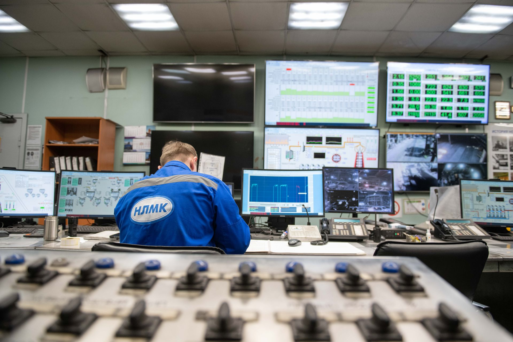
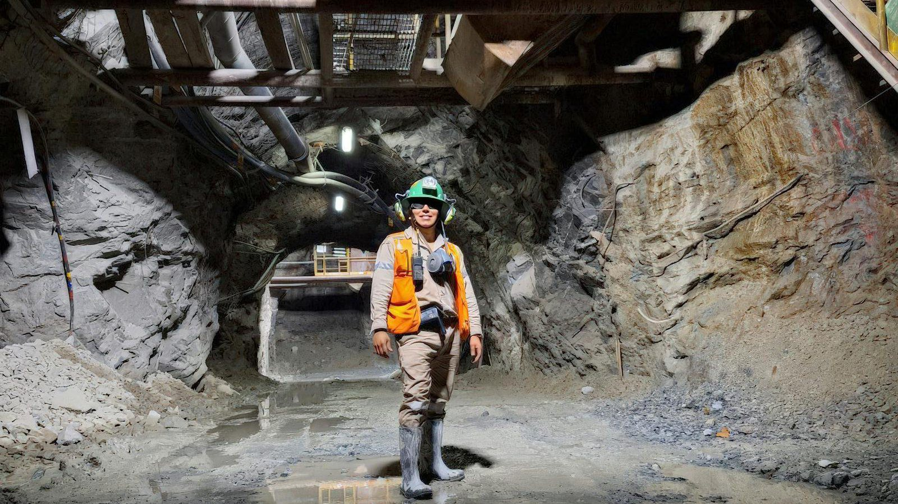
Covers the project concept, strategic rationale, site suitability and technical specification matrix, and indicative scale models — from a mine-level pilot Geo-Repository Cell to a national Geoscience and Mine Closure Digital Campus.
This concept proposes the development of a Geo-Repository / Centralized Geoscience Data Centre on closed, reclaimed, or repurposed coal mine land as part of a sustainable mine-closure and post-mining land-use strategy. A Geo-Repository is a centralized platform for storing, managing, validating, visualizing, and disseminating spatial, geological, exploration, mine-planning, environmental, geotechnical, hydrogeological, drone-survey, remote-sensing, and closure-monitoring data.
The objective is to convert under-utilized mine infrastructure or mine-owned land into a knowledge, data, training, and decision-support facility that can serve mine closure planning; geological and exploration data archiving; land-repurposing studies; environmental and biodiversity monitoring; subsidence and slope-risk monitoring; groundwater and surface-water monitoring; drone and satellite data management; GIS-based land-use planning; statutory reporting; training and capacity building; and research collaboration with universities, geological agencies, and technical institutions.
Unlike heavy land-based industrial reuse, a Geo-Repository has a low physical footprint but high long-term institutional value. It is especially suitable where the closed mine has existing administrative buildings, control rooms, survey offices, communication infrastructure, secure compounds, or training facilities that can be repurposed. India already has a national-level reference model in the National Geoscience Data Repository (NGDR) conceptualised by the Ministry of Mines under the National Mineral Exploration Policy, 2016.
The following matrix provides a structured checklist for assessing the suitability of the proposed site for the selected repurposing option. It identifies the key physical, technical, environmental, infrastructure, legal, and owner-side readiness parameters that should be reviewed before the project is advanced to the next stage of development. The purpose of this matrix is to help the project owner understand existing site conditions, technical requirements, potential constraints, and preparatory actions required before feasibility studies, approvals, or tendering are initiated.
| Category | What to Assess / Prepare | Why It Matters | Owner-Side Readiness |
|---|---|---|---|
| Land Status | Ownership, closure status, permissible post-mining use, land-use restrictions | Legal viability for establishing data centre / geoscience facility | Land title and closure-status note |
| Building Availability | Existing mine office, survey office, control room, training centre, store building, laboratory, or administrative block | Reduces CAPEX and enables adaptive reuse of existing structures | Building condition assessment |
| Structural Safety | Foundation condition, roof condition, electrical safety, fire safety, seismic and stability check | Ensures safe occupancy and equipment installation | Structural audit report |
| Site Safety | Subsidence risk, slope stability, dump stability, abandoned voids, restricted zones | Protects staff, visitors, equipment, and long-term operations | Mine safety zoning plan |
| Physical Security | Compound wall, access control, CCTV, secure server room, restricted archive room | Protects sensitive geological and mine data | Security plan |
| Power Supply | Grid power, backup power, UPS, solar rooftop, DG backup, redundant supply | Ensures uninterrupted server and data operations | Power reliability plan |
| Connectivity | Fibre internet, redundant broadband, secure VPN, internal LAN, Wi-Fi, data exchange gateway | Critical for data access, upload, remote use, and GIS services | Connectivity assessment |
| Server Room Suitability | Cooling, raised floor, dust control, humidity control, fire suppression, rack space | Required for safe IT infrastructure | Data centre room plan |
| Data Inventory | Mine plans, borehole logs, geological sections, exploration reports, maps, survey data, drone data, satellite data, environmental data | Defines repository scope and digitization workload | Legacy data inventory |
| Data Format Readiness | Paper maps, CAD, GIS, PDF, raster, vector, tabular logs, LAS, shapefile, GeoPackage, GeoTIFF | Determines digitization and data migration effort | Data format matrix |
| Metadata Readiness | Dataset owner, date, scale, coordinate system, lineage, accuracy, method, restrictions | Enables searchability, reliability, and reuse | Metadata template |
| Cybersecurity | Role-based access, encryption, backup, audit logs, firewall, endpoint security, disaster recovery | Protects sensitive and strategic geological and mine data | Cybersecurity framework |
| Analytics Capability | GIS, remote sensing, 3D modelling, mine-closure dashboards, AI / ML analytics | Creates decision-support value beyond basic data storage | Analytics architecture |
| Human Resources | GIS analysts, geologists, surveyors, data managers, IT administrators, drone operators | Required for sustained technical operation | Staffing and training plan |
| Institutional Linkage | GSI, academic institutions, mining institutes, state agencies, research labs, startups | Improves technical quality, data use, and institutional reach | MoU / partnership plan |
The following matrix presents an indicative relationship between available site area, project scale, technical configuration, and likely development potential. It is intended to support preliminary planning by helping the project owner identify the appropriate scale and configuration for the proposed repurposing option. The values and recommendations are indicative and should be refined through detailed feasibility studies, site surveys, engineering assessments, and relevant technical and commercial evaluations.
| Land / Built-up Area | Recommended Scale | Configuration | Use Case |
|---|---|---|---|
| 0.25–1 ha / 500–1,500 sq. m | Pilot Geo-Repository Cell | Digitization room, GIS workstation lab, small server room, physical archive, training room | Mine-level data archive and closure-monitoring support |
| 1–3 ha / 1,500–5,000 sq. m | Mine Cluster Geo-Repository | Central server room, GIS lab, map archive, drone data unit, training facility, dashboard room | Cluster-level support for multiple closed mines |
| 3–10 ha / 5,000–15,000 sq. m | Regional Geoscience Data Centre | Data centre, physical archive, interpretation lab, 3D visualization room, remote-sensing unit, capacity-building centre | Regional mine-repurposing, exploration, and land-use planning hub |
| 10–25 ha / 15,000–40,000 sq. m | Integrated Geo-Knowledge Campus | Geo-repository, research centre, innovation lab, skilling institute, conference facility, drone testing area, public gallery | Just-transition flagship and institutional knowledge hub |
| 25 ha+ | National / Multi-State Geoscience and Mine Closure Digital Campus | Large data centre, disaster recovery site, AI / ML centre, national archive, training academy, research and startup ecosystem | Large-scale strategic digital infrastructure model |
Describes the seven implementation models available for Geo-Repository projects and the comparative assessment that drives model selection based on data governance, ownership, livelihood, and long-term data maintenance objectives.
The following table outlines the possible implementation models that may be considered for developing the proposed repurposing project. These models differ in terms of ownership structure, funding responsibility, private sector participation, operational control, and long-term risk allocation. The purpose of this table is to help the project owner compare broad development routes and select an implementation approach that aligns with its financial capacity, institutional preference, risk appetite, and long-term asset management objectives.
| Main Group | Model | Core Feature | Broad Suitability |
|---|---|---|---|
| Owner-Funded Digital Infrastructure | EPC | Mine owner funds and procures civil renovation, server room, digitization equipment, GIS lab, archive room, network, power backup, and basic software through a contractor | Suitable for pilot or mine-level geo-repository where the owner wants full control over data, infrastructure, access, and operations |
| Owner-Controlled Operations | EPC + O&M / FM | Mine owner develops via EPC and appoints a professional agency for digitization, metadata creation, GIS operations, IT maintenance, cybersecurity, and user support | Highly suitable where the repository will handle sensitive mine data and where owner control and long-term maintenance are important |
| Private-Financed Transfer | BOOT | Private developer invests in digital and physical infrastructure, operates the repository for a concession period, provides data services, and transfers assets to the mine owner at end | Suitable where revenue from data services, analytics, training, and institutional users can support private investment |
| Private Commercial Data Services | BOO | Private developer builds, owns, and operates the data infrastructure providing commercial GIS, geological data, mapping, and analytics services | Suitable for commercially oriented geospatial service centres; less preferred where mine data sovereignty and public accountability are primary |
| Structured PPP | DBFOT | Private concessionaire designs, builds, finances, operates, and transfers the geo-repository under a structured agreement with performance, cybersecurity, and data-governance obligations | Suitable for large regional repositories, mine-closure digital campuses, disaster-recovery repositories, and multi-mine data platforms |
| Land / Facility Concession | Concession / Lease-Develop-Operate | Mine owner retains land and core data ownership while granting facility development and operation rights to a specialist agency, SPV, technology provider, or research consortium | Very suitable where mine owner wants to reuse land / buildings, earn lease or service revenue, and ensure professional digital operations with strict data-control clauses |
| Multi-Stakeholder Partnership | Hybrid | Combines mine-owner land / building support, technology provider, GIS agency, research institution, government scheme, CSR, academic partner, and local skilling component | Most suitable for balancing mine-closure compliance, digital asset creation, research use, local skill development, public value, and long-term sustainability |
The following comparative assessment evaluates the major implementation models across key decision parameters such as investment requirement, ownership control, financing responsibility, contractual complexity, risk transfer, and long-term economic benefit. This matrix is intended to support early-stage decision-making by highlighting the relative strengths and limitations of each model. The final choice of model should be guided by the specific circumstances of the project, including its scale, commercial viability, applicable policy framework, and the owner's institutional preference.
| Evaluation Parameter | EPC | EPC+O&M/FM | BOOT | BOO | DBFOT | Concession / LDO | Hybrid |
|---|---|---|---|---|---|---|---|
| Upfront investment by Mine Owner | High | High–Moderate | Low–Moderate | Low | Low–Moderate | Low–Moderate | Variable |
| Long-term control over data | Very High | Very High | Moderate–High (if contracted) | Low–Moderate | High with safeguards | High with safeguards | Very High if structured well |
| Suitability for welfare objective | Moderate | High | High if mandated | Moderate | High | Very High | Very High |
| Suitability for local livelihood | Moderate | High | High if mandated | Moderate | High | High–Very High | Very High |
| Suitability for GIS / technical skill development | Moderate | High | High | Moderate–High | Very High | Very High | Very High |
| Suitability for long-term data maintenance | Low–Moderate | High | High | High | Very High | Very High | Very High |
| Revenue potential | Low–Moderate | Moderate | Moderate–High | High | High | Moderate–High | Variable–High |
| Suitability for sensitive mine data | High (if owner controls access) | Very High | Moderate if regulated | Low–Moderate | High with cybersecurity clauses | High with monitoring | Very High |
| Commercial bankability | Low | Low–Moderate | Moderate | Moderate–High | High | Moderate–High | Variable |
| Overall suitability for Geo-Repository | Moderate | Very High | High | Moderate | High–Very High | Very High | Very High / Most Suitable |
The following table explains how major project responsibilities are typically allocated under different implementation models. It covers key functional areas such as site availability, financing, design and construction, regulatory approvals, operation and maintenance, revenue collection, asset ownership, and end-of-term transfer. This helps clarify the respective roles of the project owner, private developer, EPC contractor, operator, or concessionaire, and supports the preparation of tender documents and contractual structures.
| Responsibility Area | EPC | EPC+O&M/FM | BOOT | DBFOT | Concession / LDO | Hybrid |
|---|---|---|---|---|---|---|
| Site / building availability | Mine Owner | Mine Owner | Mine Owner / authority | Mine Owner / authority | Mine Owner / authority | Mine Owner / shared |
| Core data ownership | Mine Owner | Mine Owner | Mine Owner; developer gets operating rights | Mine Owner | Mine Owner | Mine Owner / public authority as structured |
| Building renovation | EPC contractor | EPC contractor | Developer | Concessionaire | Concessionaire / operator | Shared |
| Server room / data centre setup | EPC contractor / IT vendor | EPC contractor + O&M agency | Developer | Concessionaire | Operator / technology partner | Shared |
| Data digitization | EPC contractor / digitization vendor | O&M agency / specialist vendor | Developer | Concessionaire | Operator | Shared / specialist agency |
| GIS database design | Mine Owner / consultant | Mine Owner + O&M agency | Developer / expert | Concessionaire | Operator / expert agency | Shared |
| Cybersecurity | Mine Owner / IT vendor | O&M agency + owner oversight | Developer | Concessionaire | Operator | Shared |
| Training and capacity building | Mine Owner | O&M agency / training partner | Developer / operator | Concessionaire | Operator / academic partner | Shared; often institution-led |
| Local employment | Mine Owner-controlled | Mine Owner through contract | Contract-based | Contract-based | Contract-based | Strongly configurable |
| Revenue sharing with owner | Owner receives all | Owner receives after FM payments | Concession fee / revenue share | Concession fee / revenue share | Lease rent / service fee / revenue share | As structured |
Covers funding logic by model, revenue generation streams — data services, GIS products, training, analytics, archive services, digital twin, and consulting — and livelihood outcomes for each model.
The following table presents the broad funding logic for each implementation model. It explains who is expected to finance the project, the level of owner-side funding requirement, and the commercial rationale behind each structure. This section is intended to help the project owner assess whether the project is more suitable for owner-funded development, private investment, public-private partnership, lease or concession structure, or a hybrid funding arrangement.
| Model | Funding Source | Owner Funding Requirement | Suitability for Geo-Repository |
|---|---|---|---|
| EPC | Mine owner budget / mine closure fund / CSR / digital infrastructure budget | High | Suitable for basic repository infrastructure — digitization lab, archive room, server room, GIS lab, and training facility |
| EPC + O&M / FM | Mine owner budget + O&M budget + CSR + service fees | High–Moderate | Strong fit where owner wants control over sensitive data, statutory reporting, closure monitoring, and GIS operations |
| BOOT | Private technology partner / data services company + possible grant / VGF / CSR support | Low–Moderate | Suitable where commercial data services, training, analytics, and institutional subscriptions can support private investment |
| BOO | Private developer / geospatial company capital | Low | Suitable only for commercially driven geospatial service centres; less preferred for sensitive mine data |
| DBFOT | Private concessionaire + public / CSR support + possible VGF + institutional finance | Low–Moderate | Suitable for large regional geo-repositories with data centre, archive, analytics lab, and long-term operation |
| Concession / LDO | Private operator / technology provider / academic consortium / SPV / CSR / blended finance | Low–Moderate | Very suitable for facility reuse where mine owner retains land and data ownership while outsourcing specialist operation |
| Hybrid | Mine owner + government digital mission + CSR + technology partner + academic institution + research grants + service revenue | Variable | Most suitable for balancing data governance, mine-closure monitoring, research, skilling, and revenue generation |
The following table explains how revenue may be generated under different implementation models and identifies who is likely to receive the principal project income. It also describes the nature and extent of the financial benefit available to the project owner, whether through direct project revenue, cost savings, lease income, concession fees, revenue sharing, service charges, or eventual asset transfer. This comparison is intended to support the selection of a commercially appropriate model for the proposed repurposing project.
| Model | How Revenue is Generated | Who Receives Revenue | Owner's Financial Benefit |
|---|---|---|---|
| EPC | Data access fees, GIS map services, training fees, digitization services, analytical reports, dashboard subscriptions, consulting support | Mine Owner | Full revenue retained, but owner bears full CAPEX, O&M, technology refresh, cybersecurity, and data management risk |
| EPC + O&M / FM | Same revenue streams: data services, GIS support, training, archive services, dashboard hosting, drone data processing, closure-monitoring analytics | Mine Owner after paying O&M agency | High benefit; owner retains data and revenue while outsourcing technical operations |
| BOOT | Developer earns from data services, training, analytics, GIS subscriptions, software services, institutional users, archive digitization, and consulting during concession | Developer / concessionaire during concession | Lease rent, concession fee, revenue share, local skill development, and asset transfer at end of concession |
| DBFOT | Structured revenue from data hosting, geoscience dashboards, analytics, training, user subscriptions, archive services, drone data processing, and digital twin services | Concessionaire during concession | Concession fee, service fee, lease rent, revenue share, performance-linked payments, and transfer terms |
| Concession / LDO | Revenue from repository operations, data services, archive digitization, GIS lab use, training, consulting, dashboard subscriptions, and institutional partnerships | Concessionaire / operator as per agreement | Lease rentals, service charges, revenue share, reduced O&M burden, improved data value, and indirect compliance benefits |
| Hybrid | Mixed revenue: owner support, CSR, grants, data services, training, GIS products, institutional subscriptions, research projects, drone mapping, analytics | Shared between owner, operator, academic partner, SPV, or technology partner as structured | Variable to high; owner benefits through data asset creation, revenue share, ESG gains, and enhanced institutional value |
The following table assesses the likely local livelihood and employment potential of each implementation model. It considers the extent to which each model can support construction-phase jobs, long-term operational employment, local procurement opportunities, skill development, community participation, and associated support services. This section is particularly relevant where the repurposing project is expected to contribute to post-mining or post-operational economic transition and sustained local community benefit.
| Model | Local Job Potential | Why | Overall Suggestibility for Local Livelihood |
|---|---|---|---|
| EPC | Low–Moderate | Creates short-term jobs in building renovation, scanning, equipment installation, electrical work, networking, and archive setup. Long-term jobs depend on owner-led operations | Moderate |
| EPC + O&M / FM | High | Supports sustained jobs in GIS support, data entry, map scanning, archive management, field survey assistance, drone data processing, IT support, security, and facility management | High |
| BOOT | High | Generates jobs during setup and operation; local employment can be strong if the agreement mandates training, apprenticeships, GIS skilling, and local recruitment | High |
| BOO | Moderate | Can create technical jobs, but local livelihood depends mainly on private developer policy unless contractually mandated | Moderate |
| DBFOT | High–Very High | Suitable for regional facilities with data centre operations, geoscience analytics, training centre, digital archive, drone mapping, and research support | High–Very High |
| Concession / LDO | Very High | Strong model for long-term local livelihood through GIS training, data digitization jobs, archive management, facility operations, drone survey support, and technical apprenticeships | Very High |
| Hybrid | Very High | Best suited for combining mine-owner support, technology expertise, academic training, CSR, local skilling, community outreach, and digital employment pathways | Very High / Most Suitable |
The following combined comparison brings together three important dimensions of project structuring: revenue potential, owner-side financial benefit, and local livelihood generation. It provides a consolidated view of how each implementation model performs across commercial, institutional, and community-development perspectives. This matrix is intended to support balanced decision-making where the objective extends beyond financial return to include sustainable site reuse and long-term local economic benefit.
The following table assesses the likely local livelihood and employment potential of each implementation model. It considers the extent to which each model can support construction-phase jobs, long-term operational employment, local procurement opportunities, skill development, community participation, and associated support services. This section is particularly relevant where the repurposing project is expected to contribute to post-mining or post-operational economic transition and sustained local community benefit.
| Model | Main Revenue Source | Owner Profitability | Local Job Creation | Overall Comment |
|---|---|---|---|---|
| EPC | Data access, training, digitization services, GIS maps, analytical reports | Moderate, but owner bears full CAPEX, O&M, technology, cybersecurity, and staffing risk | Low–Moderate | Useful for initial repository setup, but weak for long-term technical operation |
| EPC + O&M / FM | Data services, GIS dashboards, training, archive services, analytics, drone data processing | Moderate–High; owner retains data and revenue after O&M payments | High | Strong where owner wants control, data security, statutory support, and sustained technical employment |
| BOOT | Commercial geo-data services, software, analytics, training, repository subscriptions | Moderate through concession fee, lease rent, revenue share, and eventual asset transfer | High | Suitable for commercial geo-repository with mandatory data-governance and livelihood clauses |
| DBFOT | Data hosting, digital archive, analytics, dashboards, training, research services, GIS platform | Moderate–High through concession fee, service fee, lease rent, revenue share | High–Very High | Good for large structured PPP projects needing private finance and professional operation |
| Concession / LDO | Repository operations, data services, GIS products, training, archive management, institutional services | Moderate–High through lease rent, service fee, revenue share, and improved data value | Very High | Very suitable for community-linked digital livelihood and professional geoscience operations |
| Hybrid | Mixed revenue from grants, CSR, data services, training, research projects, GIS products, digital monitoring | Variable–High depending on support structure and revenue-sharing | Very High | Most suitable for balancing mine closure, data governance, research, skilling, public value, and commercial use |
Describes what must be ready before the first RFP — building safety, data inventory, metadata standards, cybersecurity requirements, connectivity assessment — and what can be taken up post-award.
The following section identifies the key owner-side preparatory actions that should ideally be completed before issuing the first Request for Proposal. These actions are aimed at reducing uncertainty for prospective bidders, improving project bankability, clarifying site availability, identifying approval pathways and risks, and defining the technical and commercial scope of the project. Completing these preparatory steps before tendering can improve bid quality, attract credible responses, and reduce the risk of delays during project implementation.
Before issuing an RFP for a Geo-Repository-based mine repurposing project, the mine owner should prepare the following in priority order:
The following section lists the principal activities that may be undertaken by the selected contractor, developer, concessionaire, operator, or implementation agency after award of the project. These activities generally include detailed site investigations, engineering design, statutory submissions and approvals, equipment procurement, construction, commissioning, operational planning, staff training, and performance monitoring. The distinction between pre-RFP owner preparedness and post-award implementation responsibilities helps ensure an appropriate and efficient allocation of effort across the project development cycle.
After award, the selected concessionaire / contractor / O&M agency / technology partner can take up the following activities in chronological order:
The following implementation pathway presents a practical high-level sequence for advancing the proposed repurposing concept from initial approval through to project execution and long-term operation. It outlines the broad stages of concept approval, preliminary studies, model selection, bid preparation, procurement, detailed design, statutory approvals, construction, commissioning, and ongoing operation. This pathway is indicative and should be adapted to reflect the specific complexity, regulatory requirements, financing structure, and site conditions applicable to the project.
Covers the indicative 15-step implementation pathway, preferred models in order, recommended development position as a Mine Closure Digital Knowledge and Geoscience Data Centre, key references, and domain abbreviations.
The following way forward summarizes the preferred development approach for the proposed repurposing option, based on the assessment presented in PRISM (Post Mining Repurposing Implementation and Strategy Models). It identifies the most suitable implementation models in order of preference, highlights key technical and due-diligence considerations, and outlines the recommended next steps and broad development logic. This section is intended to guide internal decision-making and support the project owner in progressing from concept-stage evaluation toward feasibility assessment, project structuring, regulatory approvals, and implementation planning.
Preferred Models, in order: (1) Hybrid Model, (2) EPC + O&M / Facility Management, (3) Concession / Lease-Develop-Operate
Why preferred: Hybrid is preferred because a geo-repository requires mine data control, institutional credibility, digital systems and public / research access. The hybrid mix should include mine-owner data governance + technical GIS / geoscience partner + academic institution + IT / cybersecurity support.
Secondary option: DBFOT may be used for large regional or multi-mine geoscience data campuses needing private finance and long-term professional operation.
Suggestable technical care: Metadata standards, GIS compatibility, data security, controlled access, digitization, backup, physical archive conditions, dashboard design and sensitive mine-data protocols must be ensured.
Recommended development logic: Start with mine closure GIS database, geological archive, borehole log system, mine-plan record archive and monitoring dashboards. Expand into training, public knowledge gallery and institutional research collaboration.
Disclaimer — All repurposing interventions proposed under P.R.I.S.M. shall remain subject to applicable mining laws, land-use regulations, environmental approvals, mine-closure conditions, forest and biodiversity regulations, groundwater permissions, and any other statutory approvals as may be applicable. Land ownership is proposed to remain with the mine owner / competent authority unless otherwise permitted under applicable law.
| Abbreviation | Full Form |
|---|---|
| EPC | Engineering, Procurement and Construction |
| O&M | Operation and Maintenance |
| FM | Facility Management |
| BOOT | Build, Own, Operate, Transfer |
| BOO | Build, Own, Operate |
| DBFOT | Design, Build, Finance, Operate, Transfer |
| LDO | Lease-Develop-Operate |
| PPP | Public-Private Partnership |
| CSR | Corporate Social Responsibility |
| RFP | Request for Proposal |
| DPR | Detailed Project Report |
| CAPEX | Capital Expenditure |
| ESG | Environmental, Social and Governance |
| GIS | Geographic Information System |
| GNSS | Global Navigation Satellite System |
| AI | Artificial Intelligence |
| ML | Machine Learning |
| IT | Information Technology |
| LAN | Local Area Network |
| VPN | Virtual Private Network |
| UPS | Uninterruptible Power Supply |
| CAD | Computer-Aided Design |
| MERT | Mineral Exploration Reporting Template |
| NGDR | National Geoscience Data Repository |
| GSI | Geological Survey of India |
| OGC | Open Geospatial Consortium |
| API | Application Programming Interface |
| DEM | Digital Elevation Model |
| LiDAR | Light Detection and Ranging |
| GeoTIFF | Georeferenced Tagged Image File Format |
| LAS | Log ASCII Standard |
| SPV | Special Purpose Vehicle |
| VGF | Viability Gap Funding |
| MoU | Memorandum of Understanding |
| USGS | United States Geological Survey |
| BGS | British Geological Survey |
| IUGS | International Union of Geological Sciences |
| CGI | Commission for the Management and Application of Geoscience Information |
| CCO | Coal Controller Organisation |
| DST | Department of Science and Technology |
| DPIIT | Department for Promotion of Industry and Internal Trade |
| MeitY | Ministry of Electronics and Information Technology |
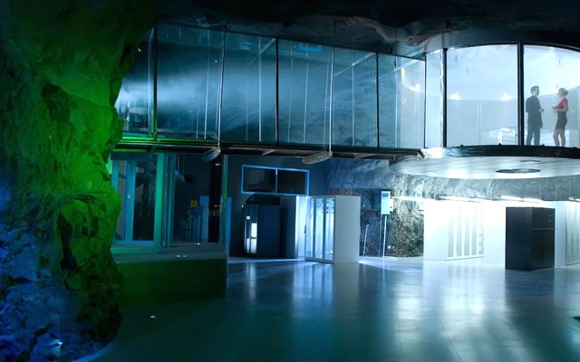
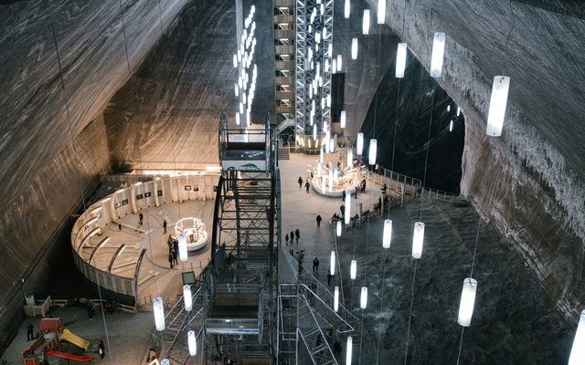
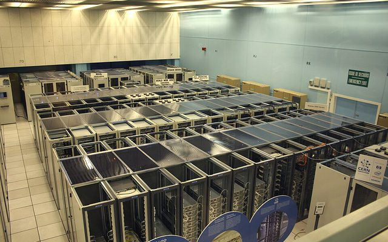
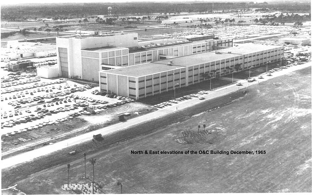
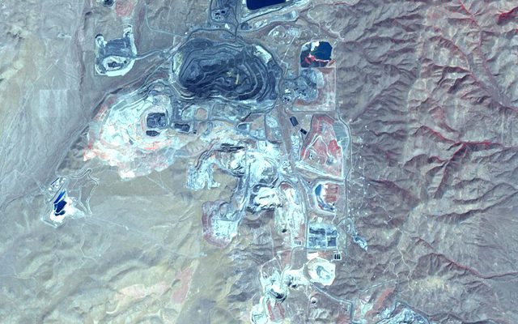
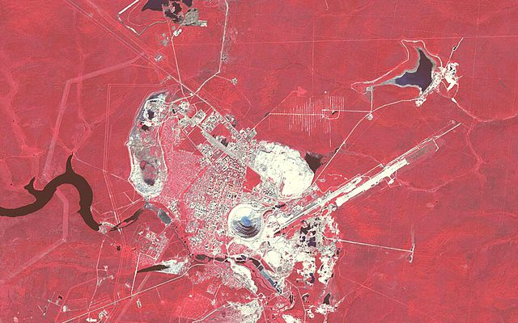
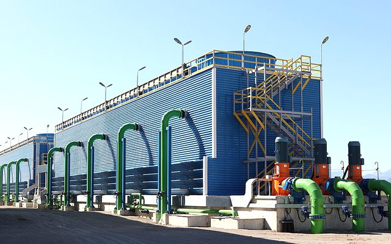
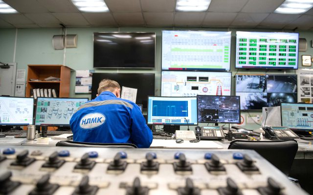
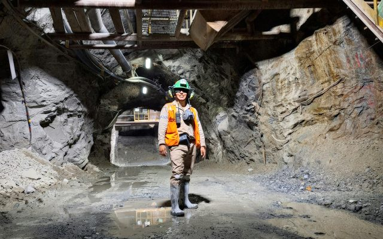
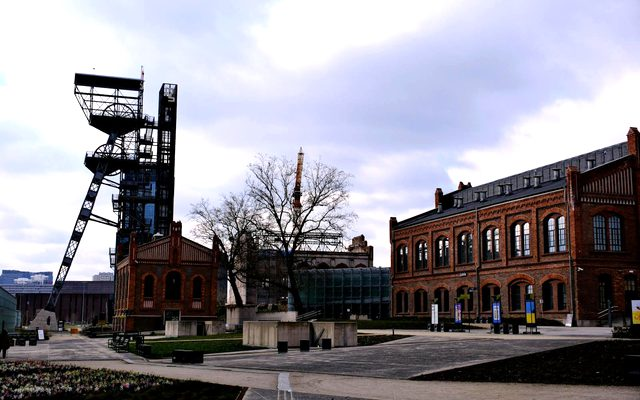
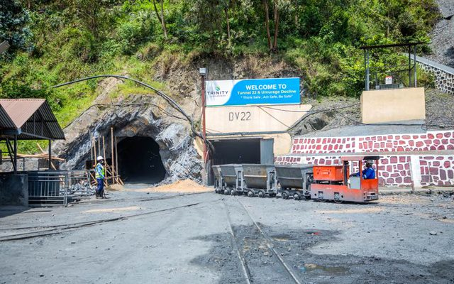
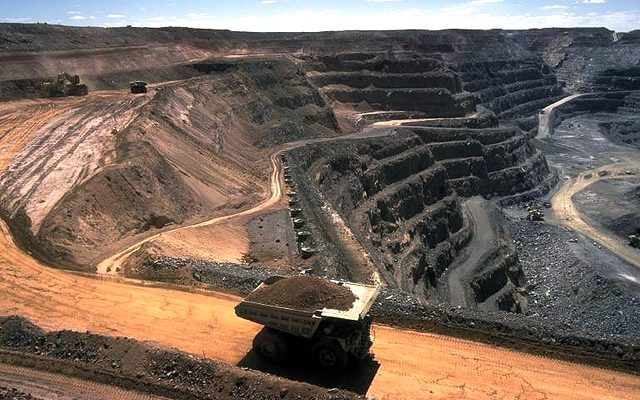
Links open external websites. Coal Controller Organisation does not endorse third-party content.
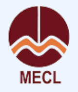

.svg)


Disclaimer: Inclusion of an agency on this list does not constitute endorsement, empanelment, or recommendation by the Coal Controller Organisation or the Ministry of Coal, Government of India. Mine owners and project proponents are advised to conduct their own due diligence process before engaging any agency.
This is an indicative list of domain areas and institutional profiles. Mine owners should engage qualified professionals with relevant certifications, verified track records, and appropriate institutional affiliations. This list does not constitute an endorsement.
Disclaimer: Inclusion of an expert does not constitute endorsement, empanelment, or recommendation by the Coal Controller Organisation or the Ministry of Coal, Government of India. Users are advised to independently verify credentials and suitability before engaging any individual.